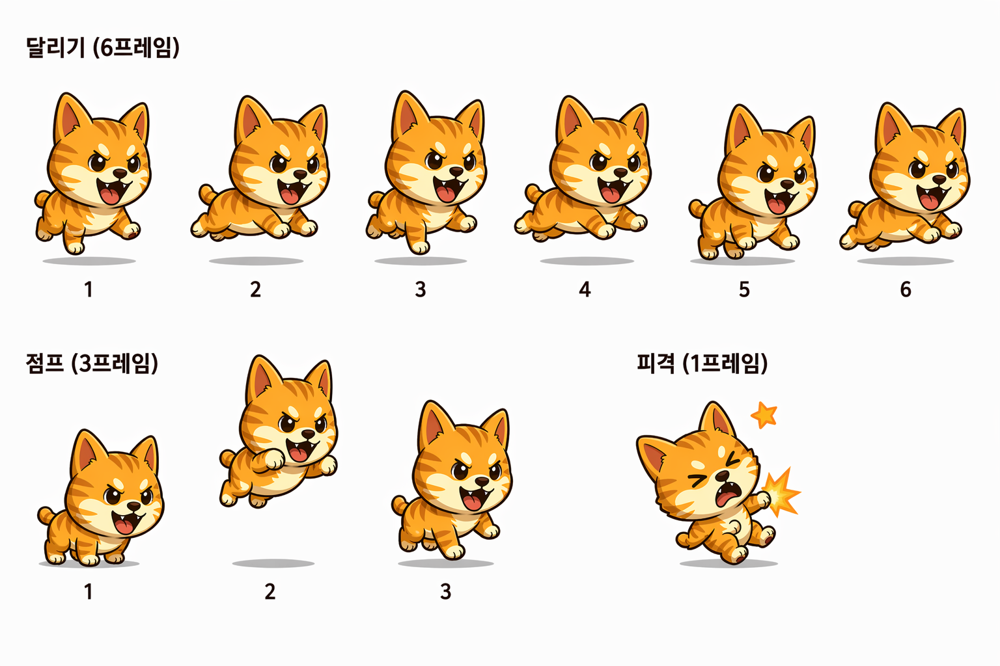
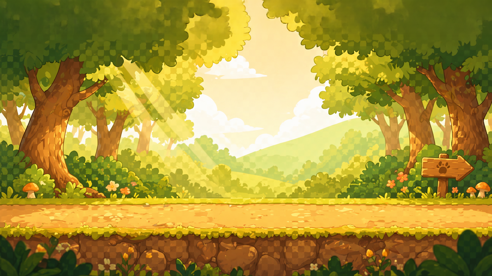
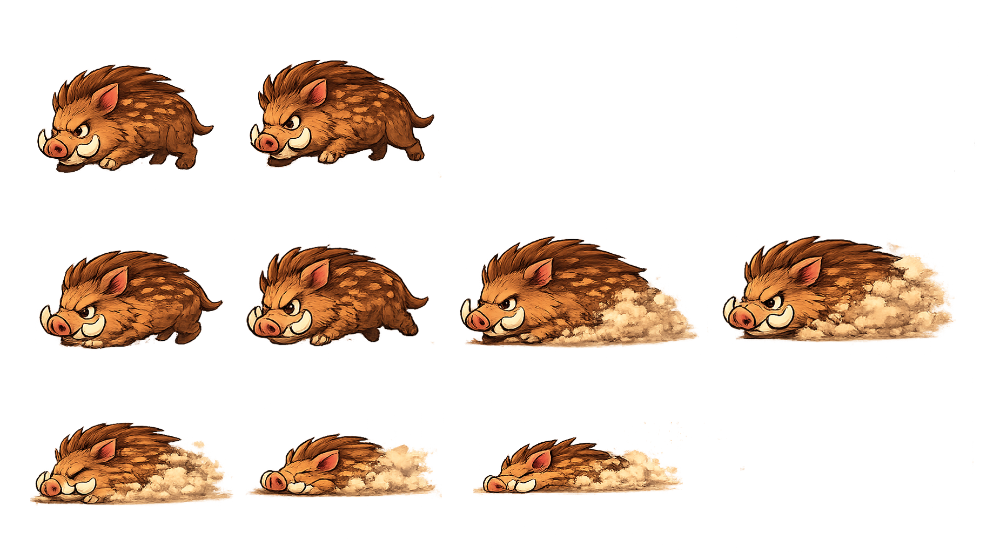
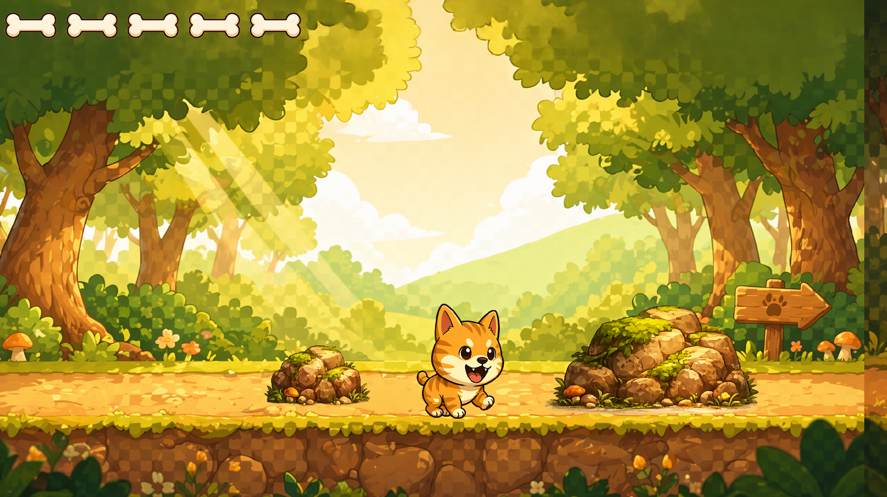
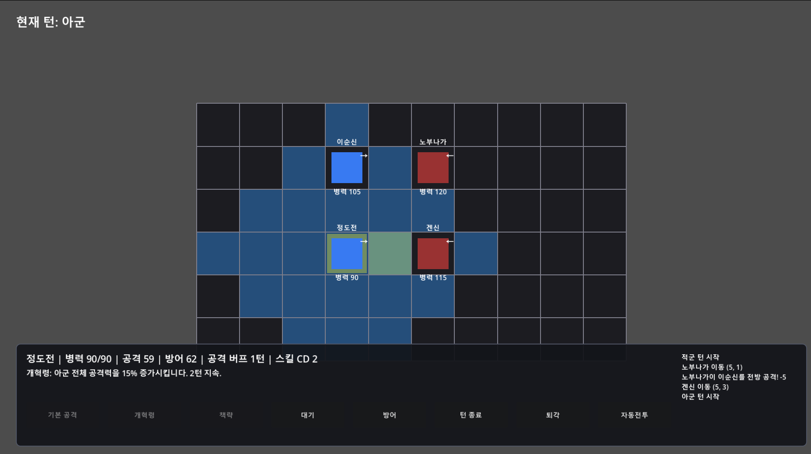
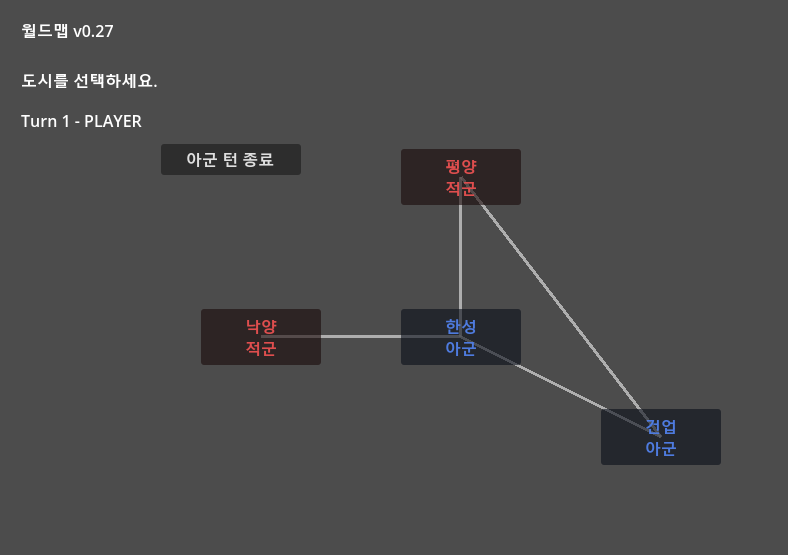

EASTWAR Dev Log #002
Choosing the Engine — How a Dog Named Donggyeong Led Me to Godot
April 23 – April 30, 2026The poster was done. The world concept was set. Now it was time to actually build the game.
There was just one problem. I had never made a game before. Not once.
Donggyeong — An Unexpected First Step
April 23 – 25
Before picking a game engine, I needed to build something — anything — first. Jumping straight into a strategy simulation like EASTWAR would have been reckless. I needed a warm-up.
So I pulled out an idea I'd been sitting on: Donggyeong — a side-scrolling adventure about a dog searching for his kidnapped owner. Think MapleStory, but small.
I asked ChatGPT (채코치): what's the best engine for a side-scroller?
The answer was clear. Godot Engine.
"Open-source, free, optimized for 2D, GDScript reads like Python, strong community."
That's how my first encounter with Godot began.
Three Days, One Dog Game MVP
I started by installing Godot. There was so much I didn't know. ChatGPT walked me through each step in the chat window, and I followed along.
Install Godot → Create project → Add background → Register Donggyeong as a sprite
I learned what a sprite was for the first time. ChatGPT generated the character sprites, and I handled the rest in Photoshop — cutting each frame, adjusting sizes, fixing proportions. Six frames for running, three for jumping, one for getting hit.

The background was also AI-generated: a sunlit forest entrance — the starting point of Stage 1, where Donggyeong first sets out to find his owner.

Then I started adding features one by one.
- Running, walking, jumping
- Rock obstacles
- A wild boar enemy character
- Collision detection and attack hit boxes
The wild boar got its own sprite sheet too. Two frames for running, four for charging, four for collapsing — a boar that kicks up a cloud of dust as it rushes forward.

Three days later, Donggyeong Stage 1 MVP was complete. I wrote zero code. ChatGPT handled the GDScript. I learned Godot's structure hands-on — Scenes, Nodes, Sprites, Collisions. Three days of learning through doing.

Confidence arrived. "I can actually do this."
The Real Game — Building the Battle Engine
April 27 – 30
With Godot basics under my belt, I turned toward the real target: EASTWAR's core turn-based battle engine.
This is where I changed my workflow. ChatGPT handled design discussions in chat; actual code implementation went to Codex (a local AI coding agent). Codex wrote the GDScript, I ran it in Godot, brought the results back to ChatGPT for analysis, then fed the feedback back to Codex for revision.
ChatGPT → Design → Codex → Implementation → Godot → Feedback → Repeat
Two days on this loop produced the first working battle engine.
A 10×7 grid battlefield. Heroes move and attack across tiles. Directional facing (↑↓←→) creates side and rear attack bonuses. Both manual and auto-battle modes available.

Four heroes and their unique skills:
- Yi Sun-sin — Crane Wing Bombardment: 3-tile ranged cannon attack. +15% crit bonus. The Turtle Ship in tactical form.
- Jeong Do-jeon — Reform Decree: Boosts all allied units' attack by 15% for 2 turns. The strategist's defining contribution.
- Nobunaga (enemy) — Arquebuse Volley: 2-tile ranged gunfire. Precise strikes from the musket corps.
- Kenshin (enemy) — Charge: Rush after movement for an immediate assault. The berserker's signature move.
The Strategy system: Heroes with Intelligence 80+ can deploy strategies in battle. Shake — reduces enemy attack and defense by 30%. Confusion — prevents the target from acting this turn. A layer of depth beyond pure combat.
One Day, One World Map
April 30
The day after the battle engine, I tackled the world map.
Four cities — Hanseong (player), Pyeongyang (enemy), Luoyang (enemy), Geonyeop (player) — placed on screen and connected by lines. Click a city and it transitions to the battle scene.
Turn logic was wired in. When the player ends their turn, enemy forces invade adjacent cities. The player chooses: fight directly, or let the AI auto-resolve. Small, but a complete strategic loop.

April 23 to 30 — three days for Donggyeong, two for the battle engine, one for the world map — and the skeleton of EASTWAR was standing.
Next log: struggling with Godot as a complete beginner, hitting a wall — and why both ChatGPT and Gemini pointed to the same solution: switch to web.